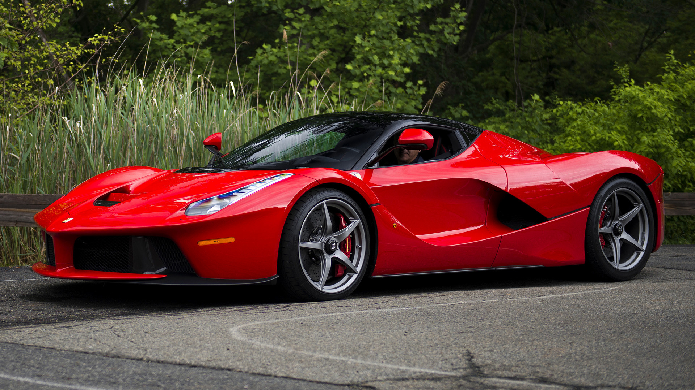

De auto's
McLaren P1

De McLaren P1 is een topklasse sportwagen met een mix van snelle benzinemotor en elektrische kracht, wat zorgt voor indrukwekkende prestaties. Zijn strakke design en luxe maken het niet alleen snel, maar ook een waar kunstwerk op wielen. Het is de belichaming van snelheid en stijl.
Meer informatieFerrari LaFerrari
De Ferrari LaFerrari is een eersteklas supercar, bekend om zijn krachtige combinatie van een V12-benzinemotor en een elektrische motor, wat zorgt voor verbluffende prestaties. Met zijn opvallende ontwerp en hoogwaardige afwerking is de LaFerrari niet alleen razendsnel, maar ook een kunstwerk op vier wielen. Het is de belichaming van snelheid, luxe en iconisch Italiaans vakmanschap.
Meer informatiePorsche 918 Spyder
De Porsche 918 Spyder is een high-end sportwagen die uitblinkt dankzij zijn krachtige mix van een benzinemotor en elektromotoren, wat leidt tot fenomenale prestaties. Met een gestroomlijnd design en hoogwaardige afwerking is de 918 Spyder niet alleen buitengewoon snel, maar ook een kunstwerk op wielen. Het vertegenwoordigt het perfecte samenspel van snelheid, luxe en Duits technisch vernuft.
Meer informatie